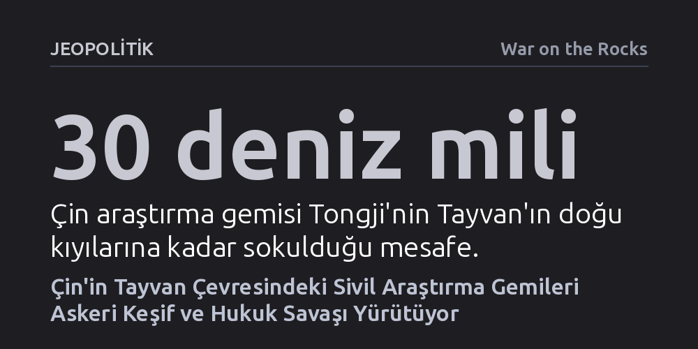

JEOPOLITIK · War on the Rocks · 2026-09-09
Çin, Tayvan çevresinde konuşlandırdığı silahsız sivil araştırma gemileriyle denizaltı savaşı için kritik oşinografik veriler topluyor ve izin almayarak egemenlik iddiasını fiilen pekiştiriyor. Pekin bu faaliyetle hem olası bir çatışmaya zemin hazırlıyor hem de bölgeyi sessizce hukuki abluka altına alıyor.
Çin'in Tayvan üzerindeki baskısının yalnızca savaş gemileri ve uçaklarla değil, sivil bilimsel araştırmalar kılıfı altında deniz tabanını haritalayan ve hukuki gri alanları kullanan sessiz bir stratejiyle ilerlediğini gösteriyor.

Tayvan Boğazı ve çevresindeki askeri hareketlilik dendiğinde uluslararası kamuoyunun dikkati genellikle Çin savaş uçaklarına, donanma tatbikatlarına ve Sahil Güvenlik gemilerinin gövde gösterilerine odaklanıyor. Oysa 2022'den bu yana giderek tırmanan, ancak radarların ve medyanın çoğunlukla gözünden kaçan çok daha sinsi bir hareketlilik söz konusu: Çin'in silahsız sivil deniz araştırma gemileri. Sayıları daha önce görülmemiş seviyelere ulaşan bu filolar, bünyelerindeki sivil denizciler, bilim insanları ve mühendislerle birlikte ilk bakışta masumane bilimsel çalışmalar yürütüyor gibi görünse de Pekin'in askeri ve siyasi hedeflerine doğrudan hizmet ediyor.
Bu gemilerin operasyon sahası son dönemde Tayvan'ın doğusuna, Japonya ve Filipinler ile çakışan kritik deniz alanlarına doğru genişledi. Filipinler ve Japonya'nın bölgedeki yetki sınırlarını belirlemek üzere ikili müzakerelere başlayacağını duyurması Pekin'i derhal harekete geçirdi. Görüşmelere davet edilmeyen Çin yönetimi, itirazını yalnızca sahil güvenlik devriyeleriyle değil; üniversitelere ve kamu destekli madencilik kurumlarına ait araştırma gemilerini sahaya sürerek gösterdi. Da Yang Hao ve Jia Geng gibi sivil gemiler günlerce bölgede tarama yaparken, Tongji gemisi Tayvan'ın etrafını tamamen dolaşarak doğu kıyısına 30 deniz mili mesafeye kadar yaklaştı.
Çinli sivil araştırmacıların topladığı veriler, akademik merakın çok ötesinde, doğrudan Çin ordusunun savaş alanı hazırlıklarına katkı sunuyor. Tayvan'ın doğu suları, Pasifik Okyanusu'nun en önemli sıcak su kanallarından biri olan Kuroshio Akıntısı'na ev sahipliği yapıyor. Bu dev akıntı, su sütununda ani sıcaklık değişimleri yaratarak ses dalgalarının yayılımını kökten etkiliyor. Ortaya çıkan karmaşık akustik profil, denizaltıların sonarlara yakalanmadan gizlenebilmesi için doğal bir sığınak sağlıyor. Çin donanması, bu akıntının akustik yapısını ve dinamiklerini ne kadar ayrıntılı haritalandırırsa, olası bir çatışmada denizaltı üstünlüğünü ele geçirmesi o kadar kolaylaşıyor.
Tehdit yalnızca su kütlesiyle de sınırlı kalmıyor; sivil gemiler deniz tabanını, batimetriyi ve stratejik su altı altyapılarını da mercek altına alıyor. Örneğin, gelişmiş insanlı derin deniz denizaltısı Jiaolong'a ana gemilik yapan Shen Hai 1'in, Tayvan'ı dünyaya bağlayan internet kablolarının 50 deniz mili açığında haftalarca faaliyet göstermesi ciddi bir alarm işareti. Pekin, olası bir abluka veya çatışma anında adanın küresel iletişimini kesebilmek için bu kabloların konumunu bilmek zorunda. Benzer şekilde, müttefiklerin denizaltı hareketlerini izlemek için yerleştirdiği taban sensörlerinin tespiti ve bölgeye önceden deniz mayını döşenebilmesi için bu sivil haritalama faaliyetleri paha biçilmez bir askeri zemin hazırlıyor.
Araştırma gemilerinin yürüttüğü seferlerin ikinci ve belki de en kritik boyutu hukuk savaşı stratejisinde yatıyor. Pekin yönetimi, Tayvan'ın Münhasır Ekonomik Bölgesi'nde faaliyet gösterirken Taipei'den izin almayı kesinlikle reddediyor. Çin'in kendi hukuk yorumuna göre yabancı gemiler kıyı devletinden izin almadan ne bilimsel ne de askeri araştırma yapabilir. Dolayısıyla Pekin'in Tayvan sularında hiçbir onay aramaksızın serbestçe gezinmesi, dünyaya 'burası zaten benim egemenlik alanım, kimseden izin istememe gerek yok' mesajını fiilen dayatıyor. Nitekim Tayvan sahil güvenliği kendisini uzaklaştırmaya çalıştığında Tongji gemisinin kaptanı, "Çin Cumhuriyeti diye bir yer yoktur, sadece Çin Halk Cumhuriyeti vardır" diyerek operasyonun siyasi misyonunu açıkça ortaya koymuştu.
Çinli stratejistlerin adım adım ilerleyip her aşamada mevzi kazanma taktiği, sahada yaratılan fiili durumların zamanla uluslararası alanda kanıksanmasını amaçlıyor. Pekin, silahsız gemiler kullanarak gerilimi doğrudan bir askeri çatışma eşiğinin altında tutuyor. Bölge ülkelerinin ve uluslararası toplumun bu ihlallere sessiz kalması ise zımni bir kabulleniş etkisi yaratıyor. Tayvan'ın egemenlik iddialarını destekleyen ülkeler tepkisiz kaldıkça, Pekin adanın etrafındaki hukuki kuşatmayı her geçen gün biraz daha daraltıyor.
Pekin'in bu stratejisi Washington'ı da hassas bir hukuki çıkmaza sürüklüyor. Birleşmiş Milletler Deniz Hukuku Sözleşmesi kıyı devletlerine sivil deniz araştırmalarını denetleme yetkisi tanırken, ABD askeri amaçlı araştırmaların kıyı devletinin iznine tabi olmadığını savunuyor. Çin'in askeri nitelik taşıyan ama sivil kılıfla yürütülen bu faaliyetlerine itiraz edilmesi, ilk bakışta Washington'ın küresel askeri serbesti teziyle çelişiyor gibi görünebilir. Ancak analistler bu ikilemin aşılabileceğini belirtiyor: Çin seferlerinin sivil olduğunu savunuyorsa Tayvan'ın yetki alanını ihlal etmiştir; askeri olduğunu kabul ediyorsa da bölgeyi istikrarsızlaştıran tehditkâr tutumu uluslararası düzeyde teşhir edilmelidir.
Tayvan ve müttefikleri açısından sessiz kalmak en riskli seçenek olarak öne çıkıyor. Taipei yönetiminin Pekin'in her izinsiz araştırma seferini belgeleyip kamuoyuna duyurması ve güvenlik ortaklarıyla istihbarat paylaşımını sıkılaştırması gerekiyor. Tayvan'ın statüsünü tanımasalar bile bölgede barış isteyen devletlerin de diplomatik itirazlarını netleştirmesi şart. Çin'in sivil araştırma filosunu askeri hazırlık ve örtülü ilhak aracına dönüştürmesi, sadece Tayvan'ın bağımsızlığını değil, Doğu Asya'daki ticaret hatlarının güvenliğini ve küresel deniz hukukunun kurallarını doğrudan tehdit ediyor.